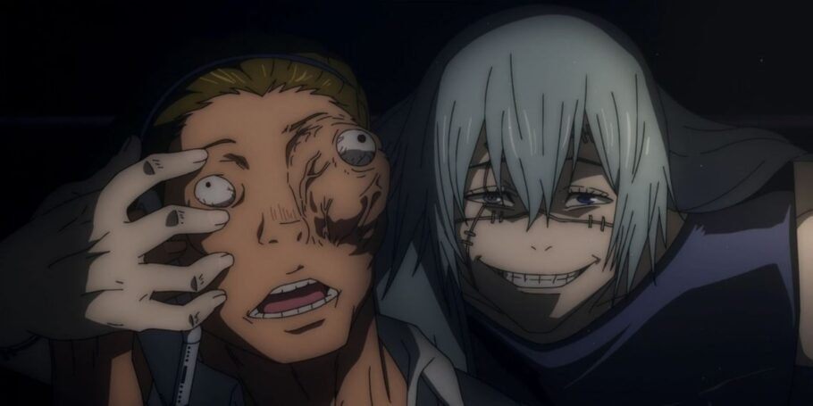
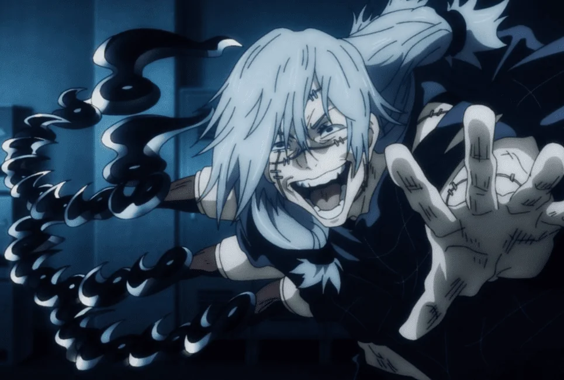
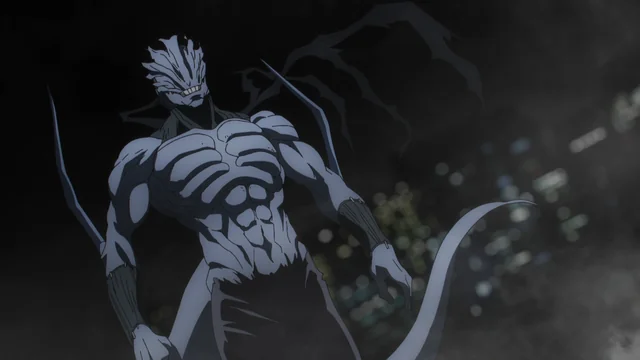

Historia
O Mahito é uma maldição de grau especial não registrado pela escola Jujutsu, nascendo do medo da morte, fazendo ele ser bem forte mesmo tendo nascido a pouco tempo
Tecnica
A tecnica do Mahito é a Transfiguração inerte, que permite ele remodelar a alma das pessoas como quiser, se estiver com a palma da mão encostada em quem ele quer usar a tecnica. Ele tambem pode usar a tecnica nele mesmo para mudar seu corpo. Ele usa a tecnica para moldar pessoas para o menor tamanho possivel para usar elas na batalha
Transfiguração inerte no Mahito
O Mahito usou sua tecnica em si mesmo varias vezes para ajudar ele na batalha, moldando o proprio corpo de varias maneiras diferentes
Corpo Espiritual Instamtâneo da Matança Distorcida
Essa forma do Mahito ele usou somente uma vez, na luta contra Todo e Itadori, essa forma é o real formato da alma dele. A pele é estremamente resistente, ele nessa forma é muito mais rapido que o commun e muito mais forte
Expansão de Dominio: Auto-encarnação da Perfeição
A expansãodo Mahito permite que ele use a Transfiguração inerte em qualquer um dentro do Dominio